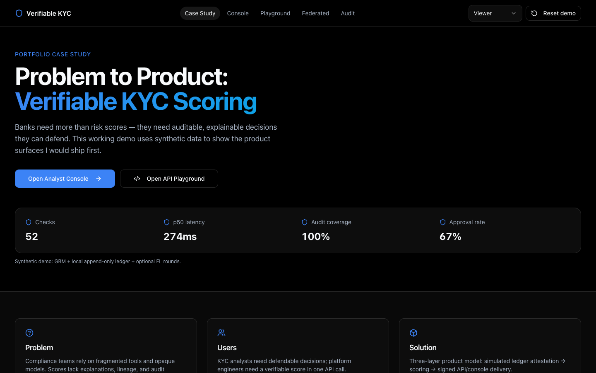
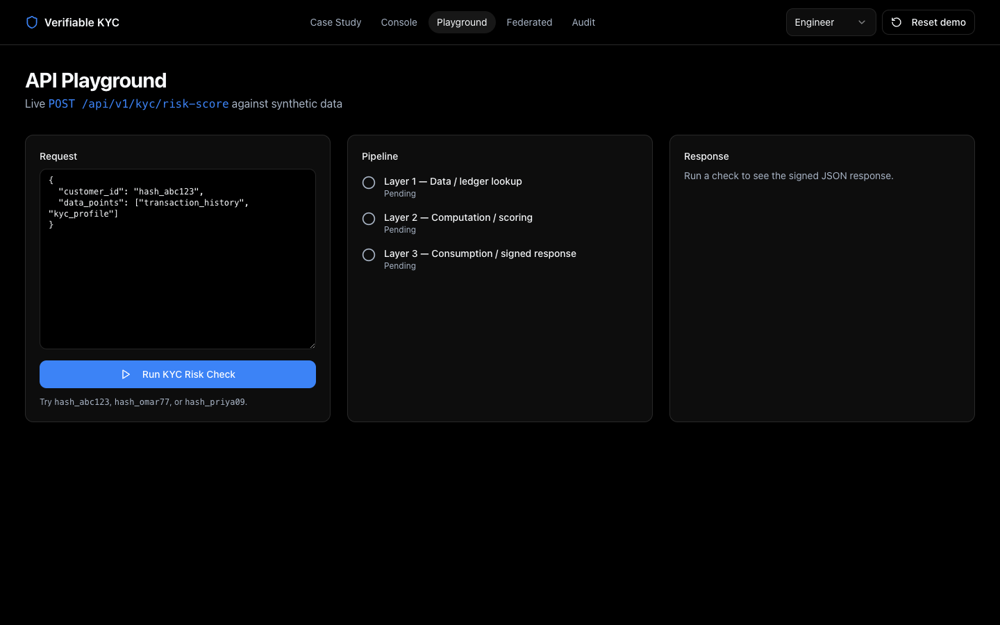
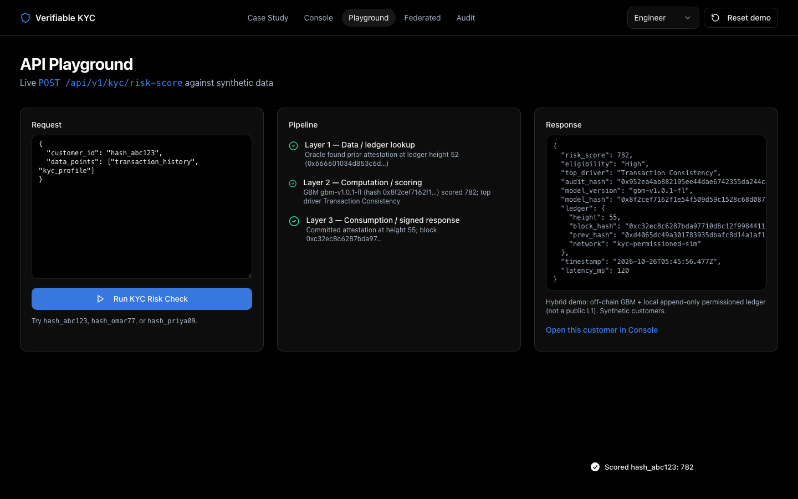
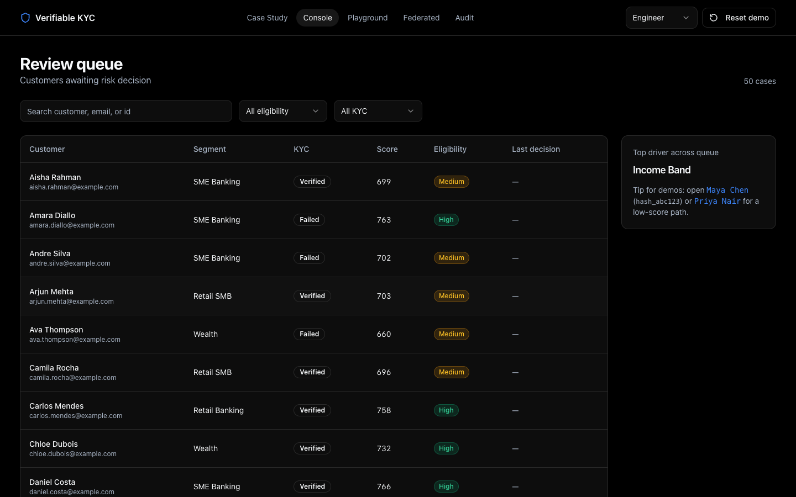
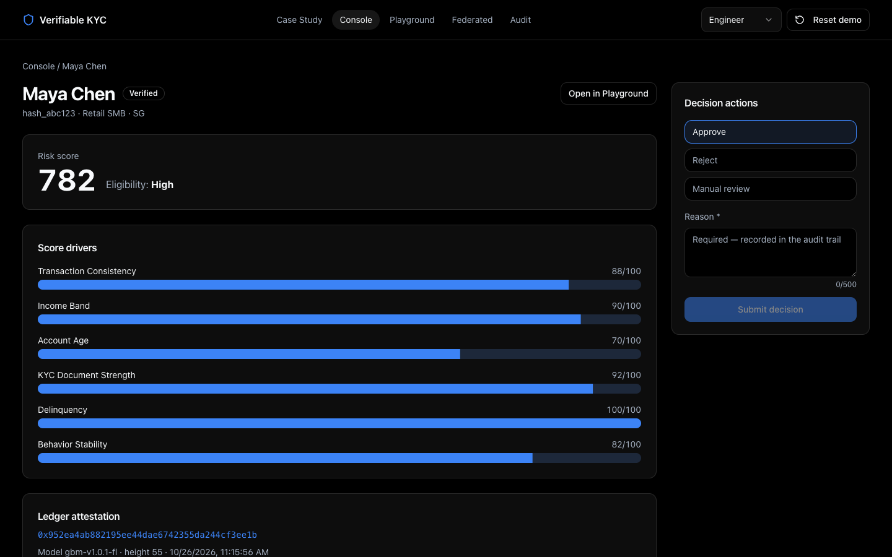
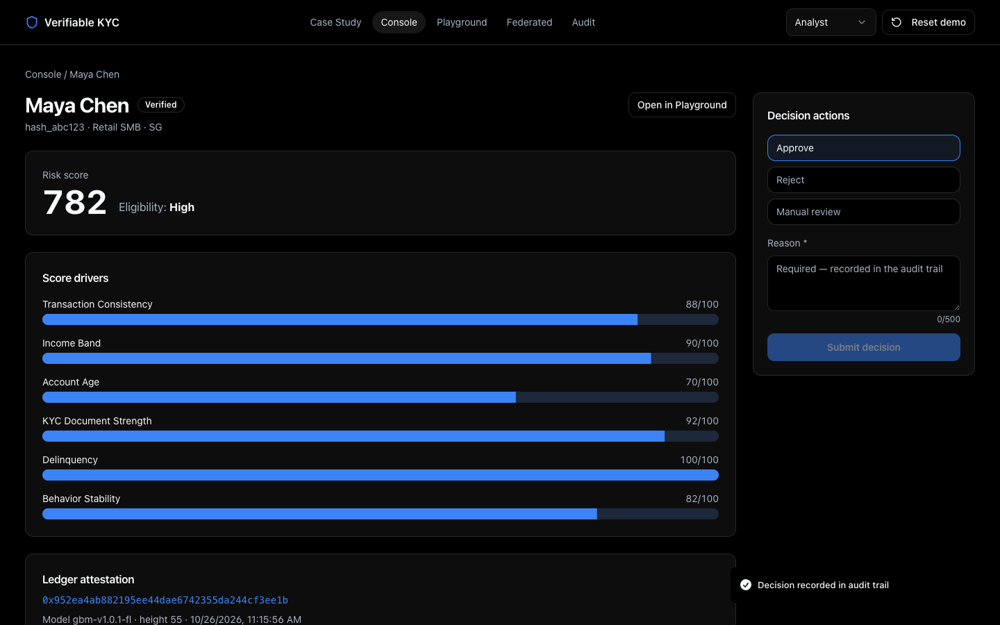
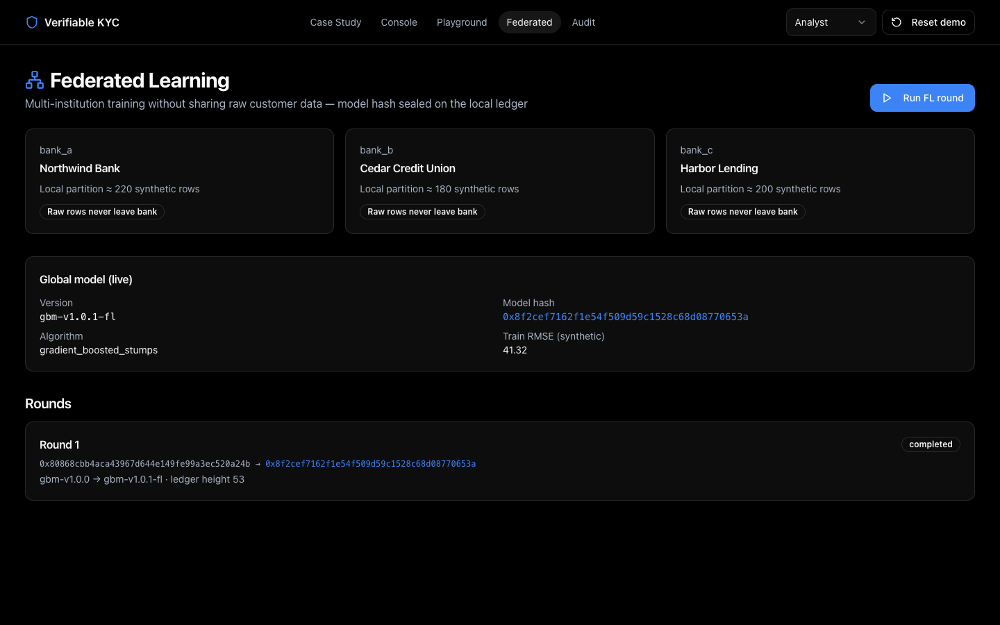
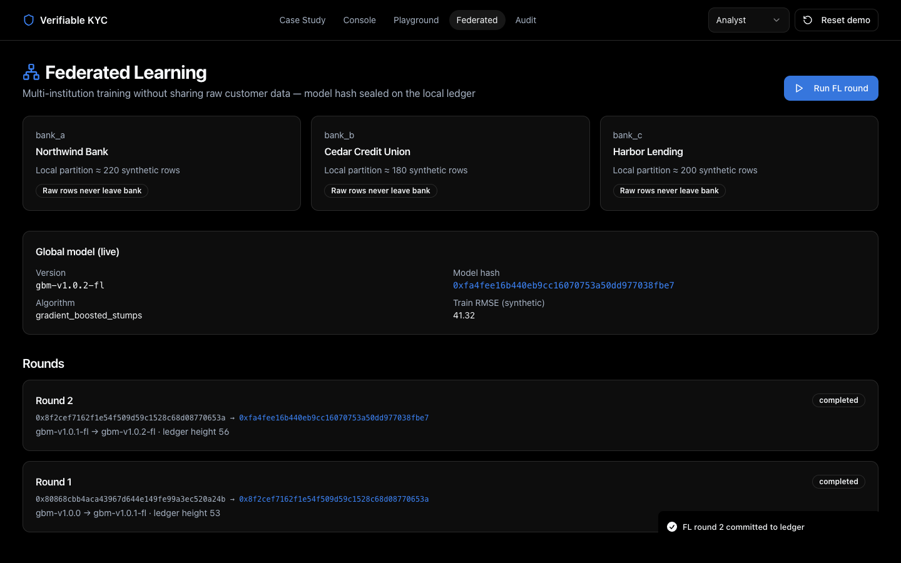
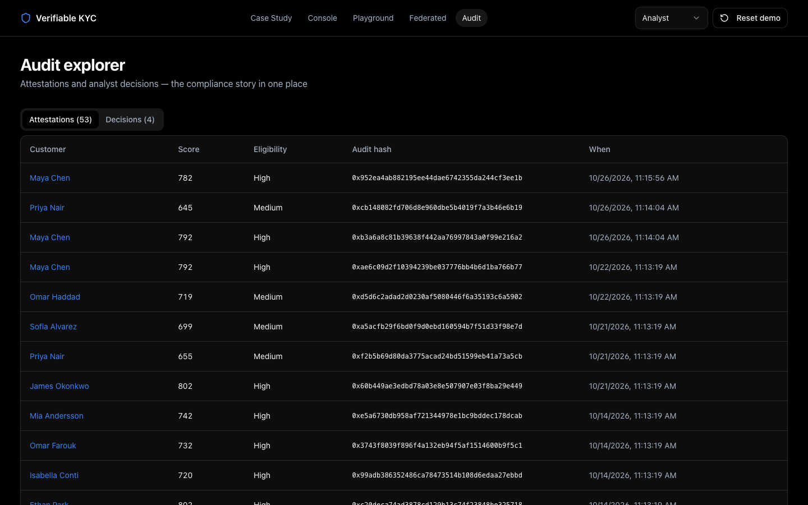

Slide 1 · Overview
Hybrid AI-on-ledger KYC — portfolio product
A working demo of verifiable credit risk scoring with a local append-only ledger, a trained GBM, dual personas (analyst + engineer), and privacy-preserving federated learning rounds.
What it proves
End-to-end risk check → ledger commit → human decision → audit
AI scoring via gradient-boosted model artifact (synthetic data)
FL across 3 institutional partitions without sharing raw rows
Honest boundaries
Ledger = local permissioned sim (not public L1 / Fabric ops)
Customers & labels are synthetic
Demo role switch, not production OAuth
Run app: npm run dev → http://localhost:8080
Slide 2 · Case study
Hiring-manager landing
Problem → users → solution → live metrics → explicit PM tradeoffs. CTAs into Console, Playground, and Federated.

Slide 3 · Architecture
Three-layer hybrid path
L1 Data — Oracle looks up prior attestation on the append-only ledgerL2 Computation — Off-chain GBM inference + feature driversL3 Consumption — Commit new attestation block + return signed JSON API
POST /api/v1/kyc/risk-score
GET /api/ledger/verify/:hash
model_hash on ledger
Slide 4 · API Playground
Engineer persona — live risk check
Editable request body, animated pipeline driven by server details, response includes audit_hash, model_hash, and ledger height.

Slide 5 · Score result
Hybrid response after Run

Slide 6 · Analyst console
Review queue
~50 synthetic customers with scores, eligibility, KYC status, and filters. Top-driver insight for triage.

Slide 7 · Customer detail
Evidence + ledger verify
Drivers, attestation hash, ledger height, and server-side chain verification status before decisioning.

Slide 8 · Decision
Approve / reject / manual review
Required reason written to the audit trail. Role must be Analyst (Viewer blocked by design).

Slide 9 · Federated learning
Privacy-preserving model improvement
Three banks train locally on partitioned synthetic rows, share parameter updates only, FedAvg aggregate, commit new model_hash to ledger.

Slide 10 · FL round complete
Model version bump on ledger

Slide 11 · Audit
Compliance explorer
Attestations (with ledger linkage) and analyst decisions in one place — the story regulators care about.

Slide 12 · Demo script
5-minute interviewer path
Case study metrics load from API
Playground: run hash_abc123 — show L1→L2→L3 + ledger height
Open customer in Console → Analyst → submit decision
Federated → Run FL round → show model hash change
Audit → point at attestation + decision rows
Video recording of this path: demo/video/e2e-workflow.mp4
← Prev
Next →